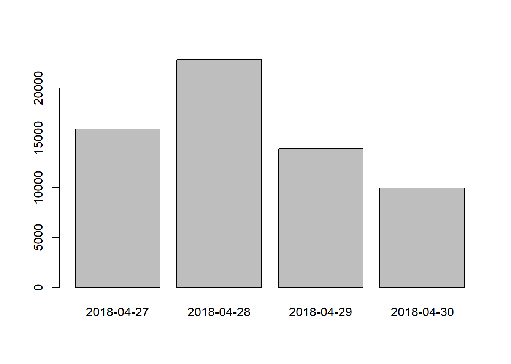

Data analysis basics
The working directory
R has a powerful notion of the working directory. This is where R looks for files that you ask it to load, and where it will put any files that you ask it to save. RStudio shows your current working directory at the top of the console and you can print this out in R code by running getwd():
getwd()
#> [1] "C:/Users/grapacciuolo/Documents"The working directory is an important concept to understand. It is the place from where R will be looking for and saving the files. When you write code for your project, it should refer to files in relation to the root of your working directory and only need files within this structure.
It is good practice to keep a set of related data, analyses, and text self-contained in the working directory. All of the scripts within this folder can then use relative paths to files that indicate where inside the project a file is located (as opposed to absolute paths, which point to where a file is on a specific computer). Working this way makes it a lot easier to move your project around on your computer and share it with others without worrying about whether or not the underlying scripts will still work.
R Studio Projects
RStudio provides a helpful set of tools to do this through its “Projects” interface, which not only creates a working directory for you, but also remembers its location (allowing you to quickly navigate to it) and optionally preserves custom settings and open files to make it easier to resume work after a break. Go through the steps for creating an “R Project” for this tutorial below.
- Start RStudio.
- Under the
Filemenu, click onNew Project. ChooseNew Directory, thenNew Project. - Enter a name for this new folder (or “directory”), and choose a convenient location for it. This will be your working directory for the rest of the day (e.g.,
~/CalAcademy-R-intro-project). - Click on
Create Project.
Using RStudio projects makes this easy and ensures that your working directory is set properly. If you need to check it, you can use getwd(). If for some reason your working directory is not what it should be, you can change it in the RStudio interface by navigating in the file browser where your working directory should be, and clicking on the blue gear icon “More”, and select “Set As Working Directory”. Alternatively you can use setwd("/path/to/working/directory") to reset your working directory. However, your scripts should not include this line because it will fail on someone else’s computer.
Organizing your working directory
Using a consistent folder structure across your projects will help keep things organized, and will also make it easy to find/file things in the future. This can be especially helpful when you have multiple projects. In general, you may create directories (folders) for code, data, and docs.
data/Use this folder to store your raw data and intermediate datasets you may create for the need of a particular analysis. For the sake of transparency and provenance, you should always keep a copy of your raw data accessible and do as much of your data cleanup and preprocessing programmatically (i.e., with scripts, rather than manually) as possible. Separating raw data from processed data is also a good idea. For example, you could have filesdata/raw/tree_survey.plot1.txtand...plot2.txtkept separate from adata/processed/tree.survey.csvfile generated by thescripts/01.preprocess.tree_survey.Rscript.code/This would be the location to keep your R scripts for different analyses or plotting, and potentially a separate folder for your functions.docs/This would be a place to keep outlines, drafts, and other text.figures/This would be a place to keep all graphic outputs generated.outputs/This would be a place to keep all non-graphic outputs generated (e.g. tables and other R objects).
You may want additional directories or subdirectories depending on your project needs, but these should form the backbone of your working directory.
For this workshop, we will need a data/ folder to store our raw data, a code/ folder to store our R scripts, outputs/ to export data and other objects, and figures/ folder for the figures that we will save.
A data folder with the data we will be analyzing already exists in the “R_workshops-Cal_Academy-Apr2019” root folder. You can copy this folder directly to your newly created working directory (e.g.,
~/CalAcademy-R-intro) by selecting the data folder in the bottom right R Studio panel (by ticking the square box on the left of the folder name), then clicking on “More” under theFilestab, then “Copy to”, and navigate to your newly created working directoryNext, to create additional folders in your directory, under the
Filestab on the right of the screen, click onNew Folderand create a folder namedcodewithin your newly created working directory (e.g.,~/CalAcademy-R-intro/code). (Alternatively, typedir.create("data")at your R console.) Repeat these operations to create acode/,outputs/andfiguresfolders.
Importing data
We are now ready to have a look at some data! We are going to be exploring iNaturalist data collected for the 2018 City Nature Challenge in the cities of San Francisco and Los Angeles (nope… no particular reason - just two random cities!).
To import the data, we will use the read.csv function:
CNC_2018_observations <- read.csv("data/CNC-2018-observations.csv", header=TRUE)This statement doesn’t produce any output because, as you might recall, assignments don’t display anything. If we want to check that our data has been loaded, we can see the contents of the data frame by typing its name: CNC_2018_observations.
Wow… that was a lot of output. At least it means the data loaded properly. Let’s check the top (the first 6 lines) of this data frame using the function head():
head(CNC_2018_observations)#> id observed_on time_observed_at user_login quality_grade
#> 1 11421522 2018-04-30 2018-04-30 23:05:01 UTC parallelbear casual
#> 2 11478879 2018-04-27 2018-04-27 07:01:10 UTC tiwane needs_id
#> 3 11478904 2018-04-27 2018-04-27 07:02:28 UTC tiwane research
#> 4 11478940 2018-04-27 2018-04-27 07:03:19 UTC tiwane research
#> 5 11478955 2018-04-27 2018-04-27 07:03:47 UTC tiwane research
#> 6 11479038 2018-04-27 2018-04-27 07:02:17 UTC rebeccafay research
#> city latitude longitude positional_accuracy
#> 1 San Francisco 37.40257 -122.0974 298
#> 2 San Francisco 37.82117 -122.3494 25
#> 3 San Francisco 37.89519 -122.3392 65
#> 4 San Francisco 37.85024 -122.2736 12
#> 5 San Francisco 37.89325 -122.2603 24
#> 6 San Francisco 37.80116 -122.4318 50
#> coordinates_obscured scientific_name common_name
#> 1 false Magnolia grandiflora southern magnolia
#> 2 true Chironomidae Non-biting Midges
#> 3 true Clogmia albipunctata Bathroom Moth Midge
#> 4 true Poa annua Annual Meadow-grass
#> 5 true Senecio vulgaris common groundsel
#> 6 false Armadillidium vulgare Common Pill Woodlouse
#> taxon_kingdom_name taxon_phylum_name taxon_class_name taxon_order_name
#> 1 Plantae Tracheophyta Magnoliopsida Magnoliales
#> 2 Animalia Arthropoda Insecta Diptera
#> 3 Animalia Arthropoda Insecta Diptera
#> 4 Plantae Tracheophyta Liliopsida Poales
#> 5 Plantae Tracheophyta Magnoliopsida Asterales
#> 6 Animalia Arthropoda Malacostraca Isopoda
#> taxon_family_name taxon_genus_name taxon_species_name
#> 1 Magnoliaceae Magnolia Magnolia grandiflora
#> 2 Chironomidae
#> 3 Psychodidae Clogmia Clogmia albipunctata
#> 4 Poaceae Poa Poa annua
#> 5 Asteraceae Senecio Senecio vulgaris
#> 6 Armadillidiidae Armadillidium Armadillidium vulgare## Try also
View(CNC_2018_observations)Note
read.csvassumes that fields are delineated by commas, however, in several countries, the comma is used as a decimal separator and the semicolon (;) is used as a field delineator. If you want to read in this type of files in R, you can use theread.csv2function. It behaves exactly likeread.csvbut uses different parameters for the decimal and the field separators. If you are working with another format, they can be both specified by the user. Check out the help forread.csv()by typing?read.csvto learn more. There is also theread.delim()for in tab separated data files. It is important to note that all of these functions are actually wrapper functions for the mainread.table()function with different arguments. As such, the CNC_2018_observations data above could have also been loaded by usingread.table()with the separation argument as,. The code is as follows:CNC_2018_observations <- read.table(file="data/CNC_2018_observations.csv", sep=",", header=TRUE). The header argument has to be set to TRUE to be able to read the headers as by defaultread.table()has the header argument set to FALSE.
What are data frames?
Data frames are the de facto data structure for most tabular data, and what we use for statistics and plotting.
A data frame can be created by hand, but most commonly they are generated by the functions read.csv() or read.table(); in other words, when importing spreadsheets from your hard drive (or the web).
A data frame is the representation of data in the format of a table where the columns are vectors that all have the same length. Because columns are vectors, each column must contain a single type of data (e.g., characters, integers, factors). For example, here is a figure depicting a data frame comprising a numeric, a character, and a logical vector.

We can see this when inspecting the structure of a data frame with the function str():
str(CNC_2018_observations)Inspecting data.frame Objects
We already saw how the functions head() and str() can be useful to check the content and the structure of a data frame. Here is a non-exhaustive list of functions to get a sense of the content/structure of the data. Let’s try them out!
- Size:
dim(CNC_2018_observations)- returns a vector with the number of rows in the first element, and the number of columns as the second element (the dimensions of the object)nrow(CNC_2018_observations)- returns the number of rowsncol(CNC_2018_observations)- returns the number of columns
- Content:
head(CNC_2018_observations)- shows the first 6 rowstail(CNC_2018_observations)- shows the last 6 rows
- Names:
names(CNC_2018_observations)- returns the column names (synonym ofcolnames()fordata.frameobjects)rownames(CNC_2018_observations)- returns the row names
- Summary:
str(CNC_2018_observations)- structure of the object and information about the class, length and content of each columnsummary(CNC_2018_observations)- summary statistics for each column
Note: most of these functions are “generic”, they can be used on other types of objects besides data.frame.
Indexing and subsetting data frames
Our CNC_2018_observations data frame has rows and columns (it has 2 dimensions), if we want to extract some specific data from it, we need to specify the “coordinates” we want from it. Row numbers come first, followed by column numbers. However, note that different ways of specifying these coordinates lead to results with different classes.
# first element in the first column of the data frame (as a vector)
CNC_2018_observations[1, 1]
# first element in the 6th column (as a vector)
CNC_2018_observations[1, 6]
# first column of the data frame (as a vector)
CNC_2018_observations[, 1]
# first column of the data frame (as a data.frame)
CNC_2018_observations[1]
# first three elements in the 7th column (as a vector)
CNC_2018_observations[1:3, 7]
# the 3rd row of the data frame (as a data.frame)
CNC_2018_observations[3, ]
# equivalent to head_CNC_2018_observations <- head(CNC_2018_observations)
head_CNC_2018_observations <- CNC_2018_observations[1:6, ] You can also exclude certain indices of a data frame using the “-” sign:
CNC_2018_observations[, -1] # The whole data frame, except the first column
CNC_2018_observations[-c(7:34786), ] # Equivalent to head(CNC_2018_observations)Data frames can be subset by calling indices (as shown previously), but also by calling their column names directly:
CNC_2018_observations["scientific_name"] # Result is a data.frame
CNC_2018_observations[, "scientific_name"] # Result is a vector
CNC_2018_observations[["scientific_name"]] # Result is a vector
CNC_2018_observations$scientific_name # Result is a vectorIn RStudio, you can use the autocompletion feature to get the full and correct names of the columns.
Factors
When looking at str(CNC_2018_observations) we can see that several of the columns consist of integers. However, the columns observed_on, scientific_name, common_name, taxon_kingdom_name, taxon_phylum_name, … are of a special class called factor. Factors are very useful and actually contribute to making R particularly well suited to working with data. So we are going to spend a little time introducing them.
Factors represent categorical data. They are stored as integers associated with labels and they can be ordered or unordered. While factors look (and often behave) like character vectors, they are actually treated as integer vectors by R. So you need to be very careful when treating them as strings.
Once created, factors can only contain a pre-defined set of values, known as levels. By default, R always sorts levels in alphabetical order. For instance, if you have a factor with 3 levels:
quality_grade <- factor(c("research", "needs_id", "research", "casual", "needs_id"))R will assign 1 to the level "casual", 2 to the level "needs_id" and 3 to the level "research" (because c comes before n which comes before r, even though the first element in this vector is "research"). You can see this by using the function levels() and you can find the number of levels using nlevels():
levels(quality_grade)
nlevels(quality_grade)Sometimes, the order of the factors does not matter, other times you might want to specify the order because it is meaningful (e.g., “low”, “medium”, “high”), it improves your visualization, or it is required by a particular type of analysis. Here, one way to reorder our levels in the quality_grade vector would be:
quality_grade # current order#> [1] research needs_id research casual needs_id
#> Levels: casual needs_id researchquality_grade <- factor(quality_grade, levels = c("research", "needs_id", "casual"))
quality_grade # after re-ordering#> [1] research needs_id research casual needs_id
#> Levels: research needs_id casualIn R’s memory, these factors are represented by integers (1, 2, 3), but are more informative than integers because factors are self describing: "research", "needs_id" and "casual" are more descriptive than 1, 2 and 3. Which observations are “research”? You wouldn’t be able to tell just from the integer data. Factors, on the other hand, have this information built in. It is particularly helpful when there are many levels (such as in the "scientific_name" field).
Renaming factors
When your data is stored as a factor, you can use the plot() function to get a quick glance at the number of observations represented by each factor level. Let’s look at the number of males and females captured over the course of the experiment:
## bar plot of the number of observations for each quality grade:
plot(CNC_2018_observations$quality_grade)
## bar plot of the number of observations in each day of CNC 2018:
plot(CNC_2018_observations$observed_on)
Let’s say we want to rename the factor level "needs_id" to "unidentified". Before doing that, we’re going to pull out the data on quality_grade and work with that data, so we’re not modifying the working copy of the data frame:
quality_grade <- CNC_2018_observations$quality_grade
head(quality_grade)#> [1] casual needs_id research research research research
#> Levels: casual needs_id researchlevels(quality_grade)#> [1] "casual" "needs_id" "research"levels(quality_grade)[2] <- "unidentified"
levels(quality_grade)#> [1] "casual" "unidentified" "research"head(quality_grade)#> [1] casual unidentified research research research
#> [6] research
#> Levels: casual unidentified researchUsing stringsAsFactors=FALSE
By default, when building or importing a data frame, the columns that contain characters (i.e. text) are coerced (= converted) into factors. Depending on what you want to do with the data, you may want to keep these columns as character. To do so, read.csv() and read.table() have an argument called stringsAsFactors which can be set to FALSE.
In most cases, it is preferable to set stringsAsFactors = FALSE when importing data and to convert as a factor only the columns that require this data type.
Data Manipulation using dplyr and tidyr
Bracket subsetting is handy, but it can be cumbersome and difficult to read, especially for complicated operations. Enter dplyr. dplyr is a package for making tabular data manipulation easier. It pairs nicely with tidyr which enables you to swiftly convert between different data formats for plotting and analysis.
Packages in R are basically sets of additional functions that let you do more stuff. The functions we’ve been using so far, like str() or data.frame(), come built into R; packages give you access to more of them. Before you use a package for the first time you need to install it on your machine, and then you should import it in every subsequent R session when you need it. You should already have installed the tidyverse package. This is an “umbrella-package” that installs several packages useful for data analysis which work together well such as tidyr, dplyr, ggplot2, tibble, etc.
The tidyverse package tries to address 3 common issues that arise when doing data analysis with some of the functions that come with R:
- The results from a base R function sometimes depend on the type of data.
- Using R expressions in a non standard way, which can be confusing for new learners.
- Hidden arguments, having default operations that new learners are not aware of.
We have seen in our previous lesson that when building or importing a data frame, the columns that contain characters (i.e., text) are coerced (=converted) into the factor data type. We had to set stringsAsFactors to FALSE to avoid this hidden argument to convert our data type.
This time we will use the tidyverse package to read the data and avoid having to set stringsAsFactors to FALSE
To load the package type:
## load the tidyverse packages, incl. dplyr
library("tidyverse")What are dplyr and tidyr?
The package dplyr provides easy tools for the most common data manipulation tasks. It is built to work directly with data frames, with many common tasks optimized by being written in a compiled language (C++). An additional feature is the ability to work directly with data stored in an external database. The benefits of doing this are that the data can be managed natively in a relational database, queries can be conducted on that database, and only the results of the query are returned.
This addresses a common problem with R in that all operations are conducted in-memory and thus the amount of data you can work with is limited by available memory. The database connections essentially remove that limitation in that you can connect to a database of many hundreds of GB, conduct queries on it directly, and pull back into R only what you need for analysis.
The package tidyr addresses the common problem of wanting to reshape your data for plotting and use by different R functions. Sometimes we want data sets where we have one row per measurement. Sometimes we want a data frame where each measurement type has its own column, and rows are instead more aggregated groups - like plots or aquaria. Moving back and forth between these formats is nontrivial, and tidyr gives you tools for this and more sophisticated data manipulation.
To learn more about dplyr and tidyr after the workshop, you may want to check out this handy data transformation with dplyr cheatsheet and this one about tidyr.
We’ll read in our data using the read_csv() function, from the tidyverse package readr, instead of read.csv().
CNC_2018_observations <- read_csv("data/CNC-2018-observations.csv")#> Parsed with column specification:
#> cols(
#> id = col_double(),
#> observed_on = col_date(format = ""),
#> time_observed_at = col_character(),
#> user_login = col_character(),
#> quality_grade = col_character(),
#> city = col_character(),
#> latitude = col_double(),
#> longitude = col_double(),
#> positional_accuracy = col_double(),
#> coordinates_obscured = col_logical(),
#> scientific_name = col_character(),
#> common_name = col_character(),
#> taxon_kingdom_name = col_character(),
#> taxon_phylum_name = col_character(),
#> taxon_class_name = col_character(),
#> taxon_order_name = col_character(),
#> taxon_family_name = col_character(),
#> taxon_genus_name = col_character(),
#> taxon_species_name = col_character()
#> )## inspect the data
str(CNC_2018_observations)## preview the data
View(CNC_2018_observations)Notice that the class of the data is now tbl_df
This is referred to as a “tibble”. Tibbles tweak some of the behaviors of the data frame objects we introduced earlier. The data structure is very similar to a data frame. For our purposes the only differences are that:
- In addition to displaying the data type of each column under its name, it only prints the first few rows of data and only as many columns as fit on one screen.
- Columns of class
characterare never converted into factors.
We’re going to learn some of the most common dplyr functions:
select(): subset columnsfilter(): subset rows on conditionsmutate(): create new columns by using information from other columnsgroup_by()andsummarize(): create summary statisitcs on grouped dataarrange(): sort resultscount(): count discrete values
Selecting columns and filtering rows
To select columns of a data frame, use select(). The first argument to this function is the data frame (CNC_2018_observations), and the subsequent arguments are the columns to keep.
select(CNC_2018_observations, scientific_name, observed_on, city)To select all columns except certain ones, put a “-” in front of the variable to exclude it.
select(CNC_2018_observations, -positional_accuracy, -user_login)This will select all the variables in CNC_2018_observations except positional_accuracy and user_login.
To choose rows based on a specific criteria, use filter():
filter(CNC_2018_observations, city == "San Francisco")Pipes
What if you want to select and filter at the same time? There are three ways to do this: use intermediate steps, nested functions, or pipes.
With intermediate steps, you create a temporary data frame and use that as input to the next function, like this:
CNC_2018_observations_SF <- filter(CNC_2018_observations, city == "San Francisco")
CNC_2018_observations_SF <- select(CNC_2018_observations_SF, scientific_name, observed_on)This is readable, but can clutter up your workspace with lots of objects that you have to name individually. With multiple steps, that can be hard to keep track of.
You can also nest functions (i.e. one function inside of another), like this:
CNC_2018_observations_SF <- select(filter(CNC_2018_observations, city == "San Francisco"), scientific_name, observed_on)This is handy, but can be difficult to read if too many functions are nested, as R evaluates the expression from the inside out (in this case, filtering, then selecting).
The last option, pipes, are a recent addition to R. Pipes let you take the output of one function and send it directly to the next, which is useful when you need to do many things to the same dataset. Pipes in R look like %>% and are made available via the magrittr package, installed automatically with dplyr. If you use RStudio, you can type the pipe with Ctrl + Shift + M if you have a PC or Cmd + Shift + M if you have a Mac.
CNC_2018_observations %>%
filter(city == "San Francisco") %>%
select(scientific_name, observed_on)In the above code, we use the pipe to send the CNC_2018_observations dataset first through filter() to keep observations made in San Francisco, then through select() to keep only the scientific_nameand observed_on columns. Since %>% takes the object on its left and passes it as the first argument to the function on its right, we don’t need to explicitly include the data frame as an argument to the filter() and select() functions any more.
Some may find it helpful to read the pipe like the word “then”. For instance, in the above example, we took the data frame CNC_2018_observations, then we filtered for rows with city == "San Francisco", then we selected columns scientific_name and observed_on. The dplyr functions by themselves are somewhat simple, but by combining them into linear workflows with the pipe, we can accomplish more complex manipulations of data frames.
If we want to create a new object with this smaller version of the data, we can assign it a new name:
CNC_2018_observations_SF <- CNC_2018_observations %>%
filter(city == "San Francisco") %>%
select(scientific_name, observed_on)
CNC_2018_observations_SFNote that the final data frame is the leftmost part of this expression.
Challenge
Using pipes, subset the
CNC_2018_observationsdata to include all animal observations with a positional accuracy less than 50 and retain only the columnsscientific_name,taxon_kingdom_name, andcity.Answer
CNC_2018_observations %>% filter(taxon_kingdom_name == "Animalia" & positional_accuracy < 50) %>% select(scientific_name, taxon_kingdom_name, city)
Mutate
Frequently you’ll want to create new columns based on the values in existing columns, for example to do unit conversions, or to find the ratio of values in two columns. For this we’ll use mutate().
To create a new column of weight in kg:
CNC_2018_observations %>%
mutate(high_positional_accuracy = positional_accuracy < 50)You can also create a second new column based on the first new column within the same call of mutate():
CNC_2018_observations %>%
mutate(high_positional_accuracy = positional_accuracy < 50,
high_positional_accuracy_numeric = as.numeric(high_positional_accuracy)
)The summarize() function
group_by() is often used together with summarize(), which collapses each group into a single-row summary of that group. group_by() takes as arguments the column names that contain the categorical variables for which you want to calculate the summary statistics. Let’s say we want to find out the mean latitude and longitude of observations by city:
CNC_2018_observations %>%
group_by(city) %>%
summarize(mean_latitude = mean(latitude, na.rm = TRUE),
mean_longitude = mean(longitude, na.rm = TRUE)
)You may also have noticed that the output from these calls doesn’t run off the screen anymore. It’s one of the advantages of tbl_df over data frame.
You can also group by multiple columns:
CNC_2018_observations %>%
group_by(city, observed_on) %>%
summarize(mean_latitude = mean(latitude, na.rm = TRUE),
mean_longitude = mean(longitude, na.rm = TRUE)
)Counting
When working with data, we often want to know the number of observations found for each factor or combination of factors. For this task, dplyr provides count(). For example, if we wanted to count the number of observations for each kingdom, we would do:
CNC_2018_observations %>%
count(taxon_kingdom_name) The count() function is shorthand for something we’ve already seen: grouping by a variable, and summarizing it by counting the number of observations in that group. In other words, CNC_2018_observations %>% count() is equivalent to:
CNC_2018_observations %>%
group_by(taxon_kingdom_name) %>%
summarise(count = n())Previous example shows the use of count() to count the number of rows/observations for one factor (i.e., sex). If we wanted to count combination of factors, such as city and taxon_kingdom_name, we would specify the first and the second factor as the arguments of count():
CNC_2018_observations %>%
count(city, taxon_kingdom_name) With the above code, we can proceed with arrange() to sort the table according to a number of criteria so that we have a better comparison. For instance, we might want to arrange the table above in (i) an alphabetical order of the levels of the species and (ii) in descending order of the count:
CNC_2018_observations %>%
count(city, taxon_kingdom_name) %>%
arrange(taxon_kingdom_name, desc(n))In the table above, we can see that there are a number of observations that have not been assigned a kingdom name (i.e. NA). These are probably observations from the casual and needs_id quality_grade categories. To focus on research_grade observations, we can start our pipeline with a filter() statement. In addition, we can reorder the columns in the output in a way that makes more sense for us with select():
CNC_2018_observations %>%
filter(quality_grade == "research") %>%
count(city, taxon_kingdom_name) %>%
arrange(taxon_kingdom_name, desc(n)) %>%
select(taxon_kingdom_name, city, n)And so, we can clearly see that, in the CNC 2018, San Francisco made more observations than L.A. for every single kingdom, except for algae. Well done SF!
Challenge
- How many species were observed in SF versus LA? (hint: see ?n_distinct)
Answer
CNC_2018_observations %>% group_by(city) %>% summarize(num_species = n_distinct(taxon_species_name))
- What was the most observed species in each city? (hint: combine count() and arrange())
Answer
CNC_2018_observations %>% count(city, taxon_species_name) %>% arrange(desc(n))
Reshaping with gather and spread
Let’s say we wanted to take our iNaturalist observations and generate a site-by-species matrix that details wether each species from our overall set of observed species was observed at each latitude/longitude combination. This would be transforming our dataset from a “long” to a “wide” format, where row values are transformed into column names.
Two handy tidyr functions, spread() and gather() simplify switching from a long to a wide data format, and vice versa.
Spreading
spread() takes three principal arguments:
- the data
- the key column variable whose values will become new column names.
- the value column variable whose values will fill the new column variables.
Further arguments include fill which, if set, fills in missing values with the value provided.
Let’s use spread() to transform CNC_2018_observations into a city-by-species matrix for all animal species. We first use filter() and select() to filter our observations and variables of interest. We also add a column called observed to indicate that that species was observed in the respective city (this will make sense in a minute!).
CNC_2018_species_SF <- CNC_2018_observations %>%
filter(taxon_kingdom_name == "Animalia" & !is.na(taxon_species_name)) %>%
select(city, taxon_species_name) %>%
mutate(observed = 1)
head(CNC_2018_species_SF)At a glance, we can see that some rows are exact duplicates since many species were observed more than once in each city. Let’s remove those using the handy dplyr function distinct_all(), because we do not want duplicated rows.
CNC_2018_species_SF <- CNC_2018_species_SF %>%
distinct_all()
head(CNC_2018_species_SF)This yields a dataset where the species observed in each city are spread across multiple rows: 1,908 observations of 3 variables. Using spread() to key on taxon_species_name with values from observed this becomes 2 observations of 1,481 variables, one row for each city and a column for each species. Remember that the argument fill enables us to assign a value for empty cells (i.e. species not found in a given city). We again use pipes:
CNC_2018_species_SF_wide <- CNC_2018_species_SF %>%
spread(key = taxon_species_name, value = observed, fill = 0)
## Here is what the "wide" data look like with str
str(CNC_2018_species_SF_wide)
## Here is what the "wide" data look like with head
head(CNC_2018_species_SF_wide[, 1:10])Success!
Gathering
The opposing situation could occur if we had been provided with data in the form of CNC_2018_species_SF_wide, where the species names are column names, but we wish to treat them as values of a species-level variable instead.
In this situation we are gathering the column names and turning them into a pair of new variables. One variable represents the column names as values, and the other variable contains the values previously associated with the column names.
gather() takes four principal arguments:
- the data
- the key column variable we wish to create from column names.
- the values column variable we wish to create and fill with values associated with the key.
- the names of the columns we use to fill the key variable (or to drop).
To recreate CNC_2018_species_SF from CNC_2018_species_SF_wide we would create a key called taxon_species_name and value called observed and use all columns except city for the key variable. Here we drop city column with a minus sign.
CNC_2018_species_SF_long <- CNC_2018_species_SF_wide %>%
tidyr::gather(key = taxon_species_name, value = observed, -city, na.rm = TRUE)
head(CNC_2018_species_SF_long)Joins
Understanding joins
It’s rare that a data analysis involves only a single table of data. Typically you have many tables of data, and you must combine them to answer the questions that you’re interested in. Collectively, multiple tables of data are called relational data because it is the relations, not just the individual datasets, that are important.
Combining two tables is most often done using joins. To help you learn how joins work, let’s use a visual representation:
x <- tribble(
~key, ~val_x,
1, "x1",
2, "x2",
3, "x3"
)
y <- tribble(
~key, ~val_y,
1, "y1",
2, "y2",
4, "y3"
)The coloured column represents the “key” variable: these are used to match the rows between the tables. The grey column represents the “value” column that is carried along for the ride. In these examples I’ll show a single key variable, but the idea generalises in a straightforward way to multiple keys and multiple values.
A join is a way of connecting each row in x to zero, one, or more rows in y. The following diagram shows each potential match as an intersection of a pair of lines.
(If you look closely, you might notice that we’ve switched the order of the key and value columns in x. This is to emphasise that joins match based on the key; the value is just carried along for the ride.)
In an actual join, matches will be indicated with dots. The number of dots = the number of matches = the number of rows in the output.
Left joins
There are multiple types of joins, but the most commonly used join is the left join: you use this whenever you look up additional data from another table, because it preserves the original observations even when there isn’t a match. The left join should be your default join: use it unless you have a strong reason to prefer one of the others. Let’s have a look at how left joins work by loading some additional data on iNaturalist images for City Nature Challenge 2018 observations.
CNC_2018_images <- read_csv("data/CNC_2018_images.csv")#> Parsed with column specification:
#> cols(
#> id = col_double(),
#> url = col_character(),
#> image_url = col_character(),
#> license = col_character()
#> )CNC_2018_imagesNow let’s join the image data in CNC_2018_images with the other observation data in CNC_2018_observations using the field “id” as our key.
CNC_2018_data <- left_join(CNC_2018_observations, CNC_2018_images, by = "id")
dim(CNC_2018_observations)
dim(CNC_2018_images)
dim(CNC_2018_data)Note how CNC_2018_data has the same number of rows as CNC_2018_observations but 3 additional columns - the number of columns of CNC_2018_images minus the shared key field “id”.
You can find a comprehensive guide to joins here.
Exporting data
Now that you have learned how to use dplyr to extract information from or summarize your raw data, you may want to export these new data sets to share them with your collaborators or for archival.
Similar to the read_csv() function used for reading CSV files into R, there is a write_csv() function that generates CSV files from data frames.
To store data output, we have already created a folder named outputs in our working directory. We don’t want to write generated datasets in the same directory as our raw data. It’s good practice to keep them separate. The data folder should only contain the raw, unaltered data, and should be left alone to make sure we don’t delete or modify it. In contrast, our script will generate the contents of the outputs directory, so even if the files it contains are deleted, we can always re-generate them.
So, let’s save CNC_2018_data as a CSV file in our outputs folder.
write_csv(CNC_2018_data, path = "outputs/CNC_2018_data.csv")